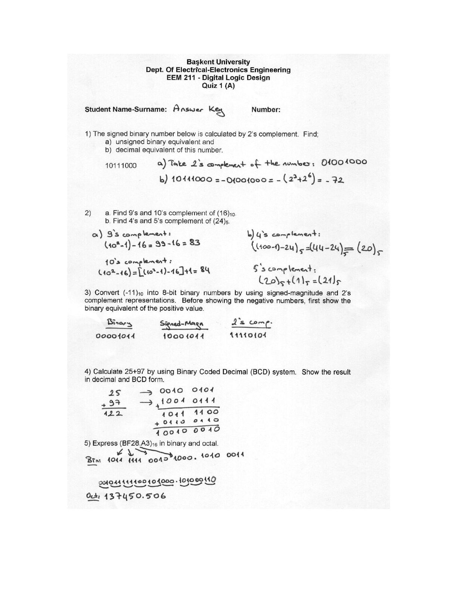
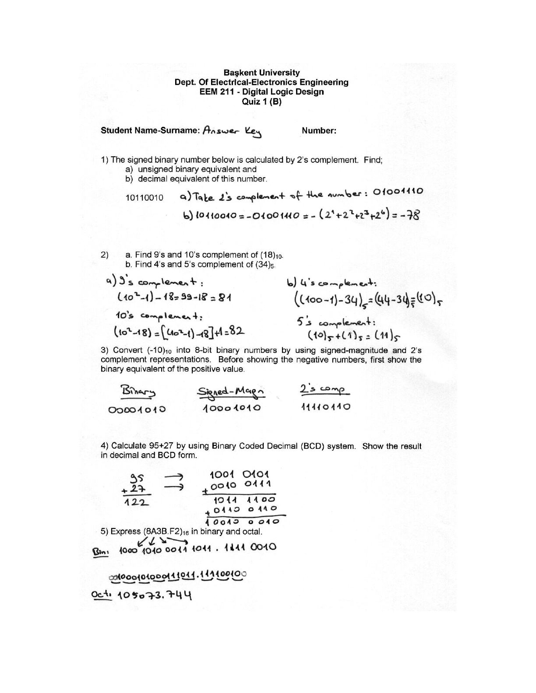

· EEM211
EEM211 Sayısal Mantık Tasarımı: Quiz 1 Cevap Anahtarı (2006)
EEM211 – Sayısal Mantık Tasarımı · 11.10.2006 · 16.10.2026
Bu yazı, Başkent Üniversitesi EEM 211 Digital Logic Design (Sayısal Mantık Tasarımı) dersinin Ekim 2006'da yapılan Quiz 1 sınavının cevap anahtarıdır. A ve B grubu için ayrı birer kâğıt var; sorular aynı, sayılar farklı. Sorular basılı, çözümler el yazısı. Belgenin dosya bilgisinde hazırlayan olarak Evren Ferhat Emekdaş yazıyor. Konu: sayı sistemleri, tümleyenler ve BCD. Orijinal Word dosyası yazının sonunda indirilebilir.
Quiz 1 (A)

Soru 1
The signed binary number below is calculated by 2's complement. Find; a) unsigned binary equivalent and b) decimal equivalent of this number. 10111000
- a) Sayının 2'ye tümleyeni alınır: 01001000
- b) 10111000 = −01001000 = −(2³ + 2⁶) = −72
Soru 2
a. Find 9's and 10's complement of (16)₁₀. b. Find 4's and 5's complement of (24)₅.
- a) 9'a tümleyen: (10² − 1) − 16 = 99 − 16 = 83
- a) 10'a tümleyen: 10² − 16 = [(10² − 1) − 16] + 1 = 84
- b) 4'e tümleyen: ((100 − 1) − 24)₅ = (44 − 24)₅ = (20)₅
- b) 5'e tümleyen: (20)₅ + (1)₅ = (21)₅
Soru 3
Convert (−11)₁₀ into 8-bit binary numbers by using signed-magnitude and 2's complement representations. Before showing the negative numbers, first show the binary equivalent of the positive value.
| Binary (+11) | Signed-magnitude (−11) | 2's complement (−11) |
|---|---|---|
| 00001011 | 10001011 | 11110101 |
Soru 4
Calculate 25+97 by using Binary Coded Decimal (BCD) system. Show the result in decimal and BCD form.
25 → 0010 0101
+ 97 → + 1001 0111
---- ----------
122 1011 1100
+ 0110 0110
-----------
1 0010 0010Soru 5
Express (BF28.A3)₁₆ in binary and octal.
- Binary: 1011 1111 0010 1000 . 1010 0011
- Üçlü gruplama: 001 011 111 100 101 000 . 101 000 110
- Octal: (137450.506)₈
Quiz 1 (B)

Soru 1
Sayı: 10110010
- a) 2'ye tümleyen: 01001110
- b) 10110010 = −01001110 = −(2¹ + 2² + 2³ + 2⁶) = −78
Soru 2
a. Find 9's and 10's complement of (18)₁₀. b. Find 4's and 5's complement of (34)₅.
- a) 9'a tümleyen: (10² − 1) − 18 = 99 − 18 = 81
- a) 10'a tümleyen: 10² − 18 = [(10² − 1) − 18] + 1 = 82
- b) 4'e tümleyen: ((100 − 1) − 34)₅ = (44 − 34)₅ = (10)₅
- b) 5'e tümleyen: (10)₅ + (1)₅ = (11)₅
Soru 3
(−10)₁₀ için:
| Binary (+10) | Signed-magnitude (−10) | 2's complement (−10) |
|---|---|---|
| 00001010 | 10001010 | 11110110 |
Soru 4
95 + 27 işleminin BCD ile yapılışı:
95 → 1001 0101
+ 27 → + 0010 0111
---- ----------
122 1011 1100
+ 0110 0110
-----------
1 0010 0010Soru 5
Express (8A3B.F2)₁₆ in binary and octal.
- Binary: 1000 1010 0011 1011 . 1111 0010
- Üçlü gruplama: 001 000 101 000 111 011 . 111 100 100
- Octal: (105073.744)₈